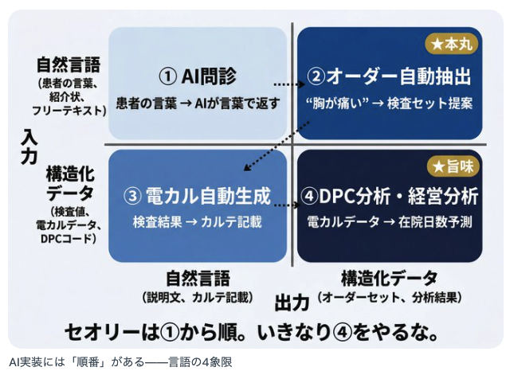
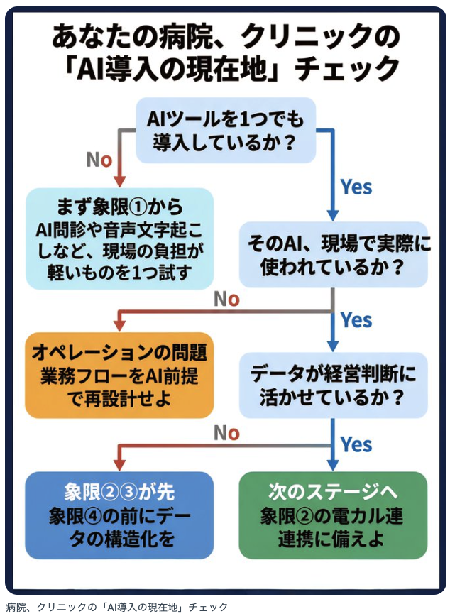
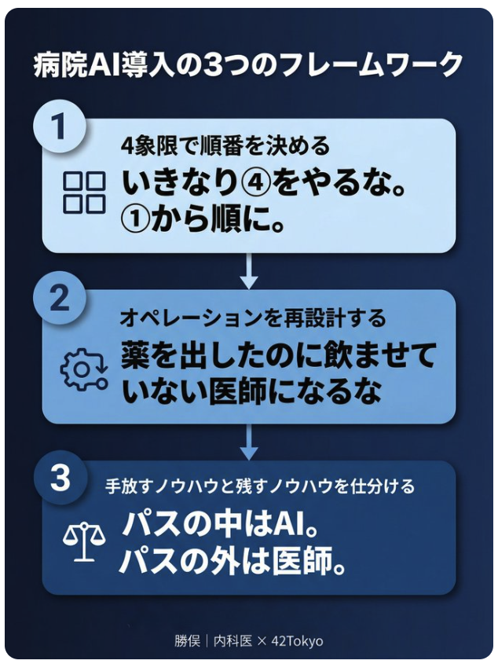

AI実装の4象限 — 入力×出力マトリクス
勝俣氏は松尾研のAI経営講座で学んだフレームワークを、病院の文脈に翻訳しています。AIの実装パターンを「入力が何か」「出力が何か」で4象限に分けると、病院で使えるAIの全体像が見えてきます。

出典: 勝俣｜内科医 × 42Tokyo（@casegenlab）
この4象限で重要なのは、すべてを同時に導入する必要はないという点です。自院がどの象限から着手すべきかを見極めることが、AI導入の最初のステップになります。
あなたの病院はどこにいる？ — AI導入現在地チェック
勝俣氏は、病院のAI導入状況を5段階で整理しています。多くの病院は「導入したが使われていない」段階で止まっているのが実態です。

出典: 勝俣｜内科医 × 42Tokyo（@casegenlab）
「環境はある。オペレーションが変わっていない」
勝俣氏が指摘する最も鋭い洞察がこれです。日本の病院におけるAI導入率は約13%。しかし問題の本質は「導入していない」ことではなく、「入れたのに使われていない」ことにあります。
環境はある。オペレーションが変わっていない。— AIの導入は処方と同じで、「出して終わり」ではなく、患者（現場）が飲み続けられる形にしなければ意味がない。
医師として日々「服薬アドヒアランス」と向き合う勝俣氏だからこその比喩です。どれだけ優れたAIツールでも、現場のワークフローに組み込まれなければ、棚の上の薬と同じ。処方するだけでなく、飲み続けてもらう仕組みが必要です。
手放していいノウハウ、手放してはいけないノウハウ
もうひとつの重要なフレームワークが、認知科学の「System 1 / System 2」の枠組みを医療AIに適用した整理です。どの業務をAIに委ね、どの業務を医師が守るべきか — その仕分けの基準を提示しています。

出典: 勝俣｜内科医 × 42Tokyo（@casegenlab）
クリニカルパスの中はAI。パスの外は医師。— この線引きが、安全と効率を両立させる鍵になる。
この仕分けは「AIに任せてはいけないもの」を明確にすることで、逆に「安心してAIに委ねられる領域」を広げる効果があります。線引きが曖昧なまま導入を進めると、現場の抵抗感は増すばかりです。
What Cursorvers Delivers
なぜ、顧問が必要なのか
勝俣氏が示した3つの課題は、そのままCursorversの顧問契約で解決できるものです。
1
象限の順番を間違えない
= 導入順序の設計
4象限のどこから着手するかは、技術の問題ではなく経営判断です。Cursorversは医療機関の現状を評価し、最適な導入順序を設計します。ベンダー任せにしない、院長の右腕としてのガバナンス。
2
オペレーションを変える
= 継続的な伴走支援
AIを「処方」して終わりにしない。現場に定着させるための業務フロー再設計と定着支援。一度きりのコンサルティングではなく、月次の伴走で「使い続けられる状態」を維持します。
3
安全の線引きを組織で合意する
= 安全性の担保
AIに委ねる領域と医師が守る領域の線引きはガバナンスそのもの。この線引きを組織として合意し、運用するための体制整備をCursorversが支援します。
AIの導入は始まりに過ぎません。
導入後に「使い続けられる」仕組みを、一緒に作りましょう。
Cursorversは医療AIの顧問として、AI運用の安全と継続を届けます。
まずは無料でご相談ください
「どの象限から始めるべきか」「現場にどう定着させるか」— 貴院の状況に合わせた具体的なアドバイスをお伝えします。